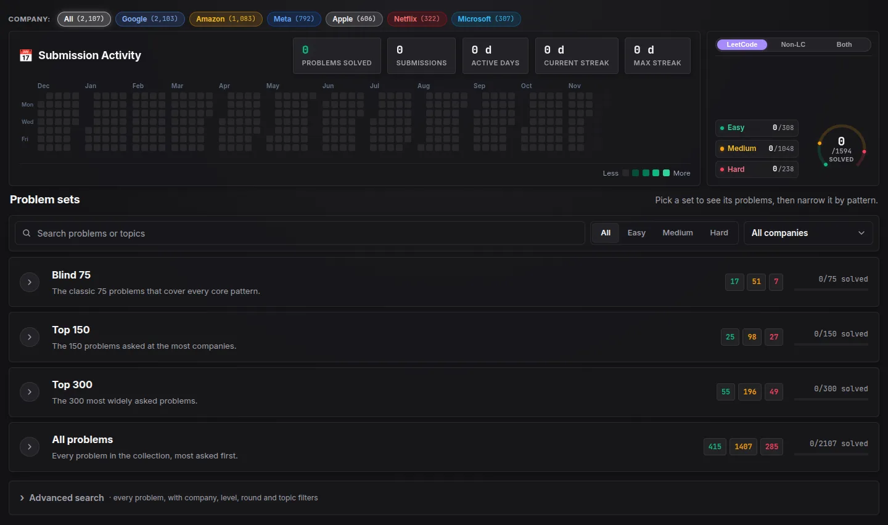
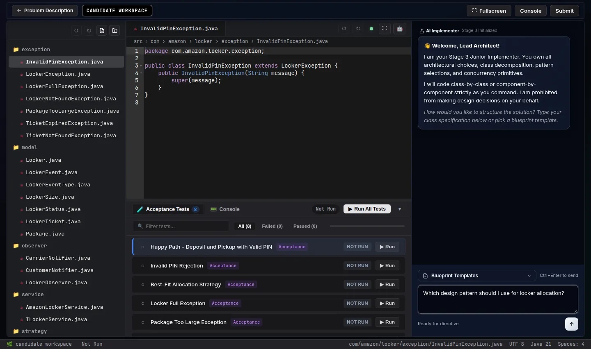
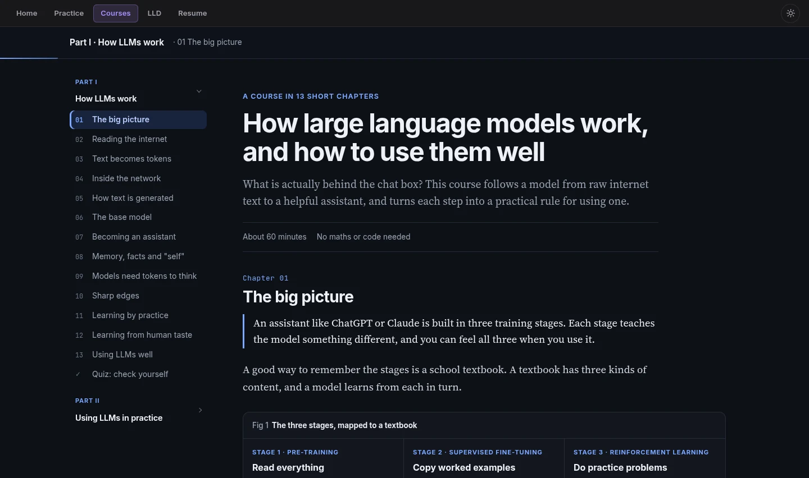

Practice by company
Solve FAANG questions from LeetCode and non LeetCode collections. Filter by company, round, difficulty, and topic.
All your FAANG practice in one place: LeetCode and non LeetCode questions, visual lessons, and LLD centered on concurrency and design patterns.
Explore questions tagged at
About 1,600 company tagged LeetCode problems, plus 500+ non LeetCode questions taken from real interview write-ups. Every non LeetCode question comes with answers: brute force to optimal, with code, complexity, and verified test cases.


Design problems reported from Amazon, Google, Uber, Stripe, and more. 38 of them demand thread-safe concurrent code. Pick the design patterns, guide an AI implementer class by class, and prove it with acceptance tests.
Paste a job description, then bring your experience as text, PDFs, GitHub repositories, or links. The builder pulls out the evidence, writes a tailored resume, reviews and revises it, then gives you an ATS-readable PDF and editable LaTeX.

Learn the underlying idea, see it behave, then practice the kind of question you will face.
Solve FAANG questions from LeetCode and non LeetCode collections. Filter by company, round, difficulty, and topic.
Use interactive labs for data structures, algorithms, and operating systems.
Practice LLD centered on concurrency and design patterns, with code, tests, and guided feedback.
Turn your experience and a job description into a resume you can review and export.
Start inside the computer, then watch the OS at work: processes and CPU scheduling, threads and locks, deadlock, system calls, paging and virtual memory, file systems, and disk I/O. Every module has live 3D labs you can step through.

Arrays, linked lists, stacks, queues, heaps, trees, graphs, and dynamic programming. Every lesson has a live 3D lab: enqueue a value, pop a node, or run Dijkstra, and see which pointer moves and why.
Learn how large language models work, from tokens and training to how a base model becomes an assistant. Then learn to use them well: context windows, picking a model, deep research, and coding with an AI editor.

A practical sequence you can repeat for every new topic or interview loop.
Read the explanation and inspect the visual model.
Change inputs and watch the behavior step by step.
Write code, run cases, and compare approaches.
Practice design and present your work clearly.
What is inside the workspace and where to start.
Yes. The practice page has company tags, problem sets, and filters for topic, difficulty, and interview round.
The data structures, algorithms, and operating systems courses include visual lessons and interactive 3D labs.
Practice problems include an editor and test console. LLD problems focus on concurrency and design patterns in a coding workspace with acceptance tests.
Choose a question if you already know the topic. Open a course first if you want to build the concept from the ground up.
You can bring in a job description, review a draft, choose a template, and export the result.
No. Practice, courses, low level design, and the resume builder are separate paths. Use the one that fits your next step.
Questions, feedback, or a problem with the site? Send us an email or open a GitHub issue.
Pick a question, open a lesson, or build a system today.
Start practicing